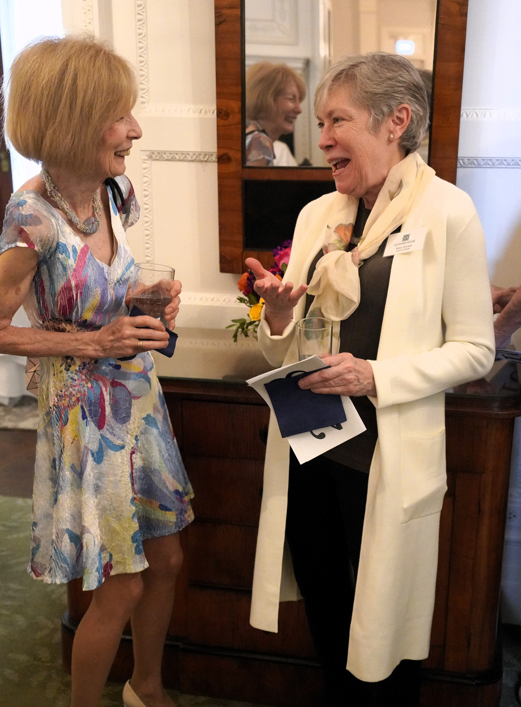

From One Landmark to Another: Frances Glessner's Gala


Supporters of Glessner House headed to the Gold Coast recently to celebrate their annual gala at The Fortnightly, the 1892 Georgian Revival masterpiece by Charles McKim of McKim, Mead, and White built for Bryan and Helen Lathrop. Frances Glessner who was a member of The Fortnightly for 53 years, from 1879 until her death in 1932, was lauded for her far-reaching impact from her Prairie Avenue Romanesque home to many Chicago philanthropic organizations and to gardens and beehives in New Hampshire. Guests received Remembering Frances Macbeth Glessner 1848 to 1932, just off the presses, which brings together for the first time quotes from those who knew her best, including Daniel Burnham and William Rainey Harper, first President of the University of Chicago, and includes portions of papers she wrote for Fortnightly meetings.


Known for her hospitality and horticulture, Frances Glessner, who along with husband John built the Prairie Avenue H.H. Richardson home in 1887, was also a gifted artist. An exhibit in the dining room that day showcased samples of her embroidery, china painting and silverwork. Included was a silver sweetmeat dish she made in an incredible art décor mode and presented to The Fortnightly in 1905.


The Glessner Gala raised more than $100,000 for the house museum's operations and a spirited paddle raise took the funding of an accessible ramp into the former coach house, now visitor's center, over the top.


William Tyre, Executive Director and Curator, presented the John and Frances Glessner Award, created in 2022 to recognize and honor an individual each year at the gala who has made an outstanding contribution to the cultural or civic life of Chicago. Aligned with the Glessner House mission, vision, and values, the award promotes our efforts to spark excitement in architecture, history, and design. Past recipients include architect Gunny Harboe, architectural historian Susan Benjamin, and Art Institute textile curator Melinda Watt. Linda Miller received this year's award for her leadership at the historic Second Presbyterian Church on Michigan Avenue near Glessner House.

In his tribute to Linda Miller, Tyre said:
"We both joined the board of Friends of Historic Second Church in 2007. The secular non-profit formed the previous year to preserve and restore the art and architecture of Chicago's landmark Second Presbyterian Church. And, in fact, I can take credit for first introducing Linda to the church on a very hot summer day in August 2004 when she and her husband Jeff, accompanied by Ann and Mike Belletire, took my Prairie Avenue Walking Tour, which concluded at the church.

"Linda, a retired healthcare executive, was a member of the first docent class in early 2006. In 2010, she was elected president and served in that role for 15 years, stepping down just six months ago, although she remains an active member of the board. When Linda took the reins, Friends had completed a couple of small projects but did not consider itself ready to tackle any of the numerous large projects, including restoration of the nine Tiffany windows. Linda had a different vision and pushed the board to think big, believing that a major restoration project would create excitement and significantly raise the visibility of Friends and broaden its base of support.
"During her first year, Friends completed its Historic Structure Report, providing a road map for future work. Soon after, Susan Burian was engaged to write the National Historic Landmark application, resulting in the designation of the church in 2013, the only individually listed church in Chicago so honored.
"Linda felt strongly that a Tiffany window restoration was essential in moving Friends to its next level. She secured a lead gift from our good friends Barbi and Tom Donnelley for the Peace window, which Barbi's family had originally funded back in 1903. Despite the fundraising still needed for the $350,000 project, she challenged the board to push forward, securing bids from the various contractors involved, confident that others would step forward to make the dream a reality. And she was exactly right – the beautifully restored window was reinstalled in 2018 – and it became the perfect marketing tool in demonstrating the need for restoration of the other windows.

"Linda had built a close relationship with the Driehaus Foundation, and soon after, Richard H. Driehaus stepped forward with a gift to fund the next window. After his death in 2021, a third window was completed in his memory. This past week, the fourth restored Tiffany window was reinstalled.
"After Friends received an anonymous $100,000 gift for the restoration of Bartlett's Tree of Life Mural, Linda wrote a successful proposal securing a grant of $256,000 through the Save America's Treasures program. The completion of the Tree of Life project completely transformed the sanctuary, and the experience visitors feel as they first walk into that space.
"Last fall, Friends was honored to receive the Landmarks Illinois Richard H. Driehaus Foundation Preservation Award for Stewardship. It was a fitting way to conclude Linda's fifteen years of extraordinary service as president of Friends. Although many have been involved in the work of Friends, and more than $4 million has been raised, it was, without a doubt, Linda's leadership and vision that helped Friends to achieve all that it has, and to establish a solid foundation for future growth and success."
Tyre shared a little more about Frances Glessner:
She was a passionate, life-long learner, arranging a series of courses in her home on various topics ranging from art to music. In 1894, she formed her Monday Morning Reading Class, led by a paid professional reader for 36 years. The class brought together women from Prairie Avenue and the University of Chicago, who were, as she wrote, "all clever, all intellectual, with high ideals." The women were often treated to special guests ranging from authors reading passages from their newest books, to William Morris's daughter May speaking on Design in Costume. The monthly luncheons for the class featured musical entertainment, usually provided by members of the Chicago Symphony Orchestra.

"The Orchestra played a vital role in her life for more than four decades. Theodore Thomas, the first music director, referred to her as "the orchestra's true friend from first to last." Frederick Stock, the second music director, dedicated his First Symphony to the Glessners, whom he referred to as his best friends. He frequently wrote to Frances Glessner asking her advice on hiring new musicians or selecting the programs for the season. He sought her assistance in helping him to run "our orchestra" as he called it. On three occasions, she hosted the entire orchestra in her home.
"I firmly believe that her greatest gift was hospitality. Our archives are filled with letters and testimonials from countless individuals who benefitted from being invited into the cozy interior she requested from architect H. H. Richardson. She carefully considered which guests to bring together and was always mindful of those who did not have a home or family during the holidays. Her informal Sunday suppers brought together mostly single men, including young professors at the University, architects, and others, many of whom came to view her as a mother figure. As one guest noted, 'she always knew how to do the things that will please the most.'


"A progressive and independent thinker, those guests were often artists, authors, musicians, and craftsmen whose creative pursuits enriched her mind and soul. As it was once noted, these individuals were often invited into other Prairie Avenue homes solely as the paid entertainment for the evening. Frances Glessner invited those same people to share a meal and engage in lively conversation with her family and friends around the dining room table, a huge distinction for Individuals represented include architects Daniel Burnham and Hermann V. von Holst, William Rainey Harper – first president of the University of Chicago. As Hermann von Holst wrote in 1924, "Mrs. Glessner and Mr. Glessner have given the inert materials composing this structure a mighty soul."
For more information about Glessner House, please visit: glessnerhouse.org
Next week we will profile the Friends of Historic Second Presbyterian Church's incredible leader Linda Miller.